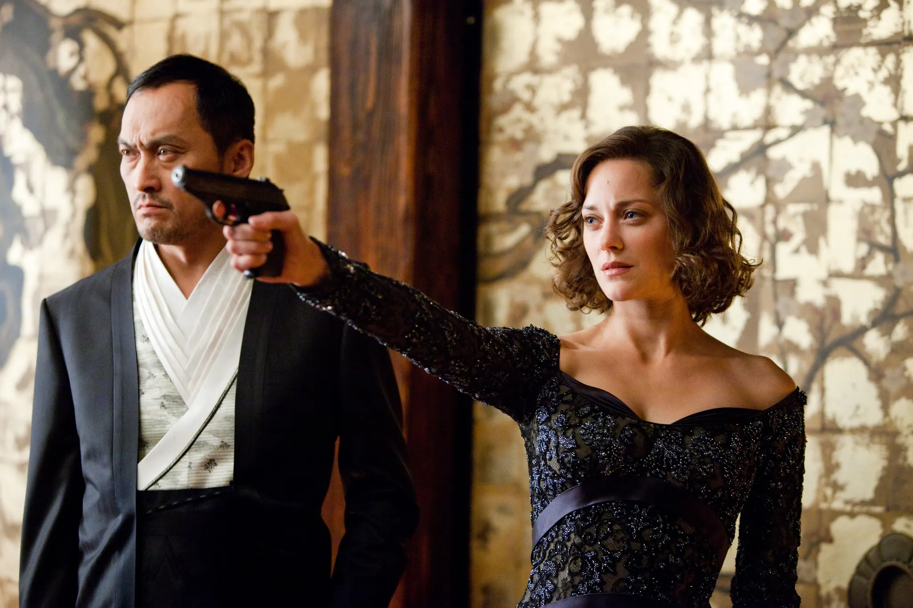
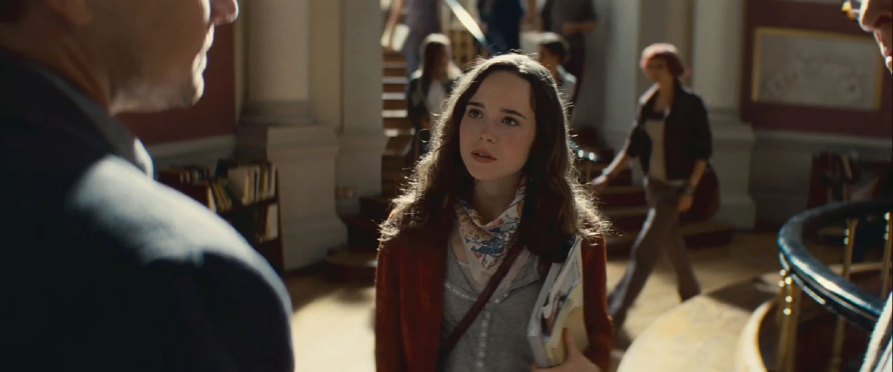
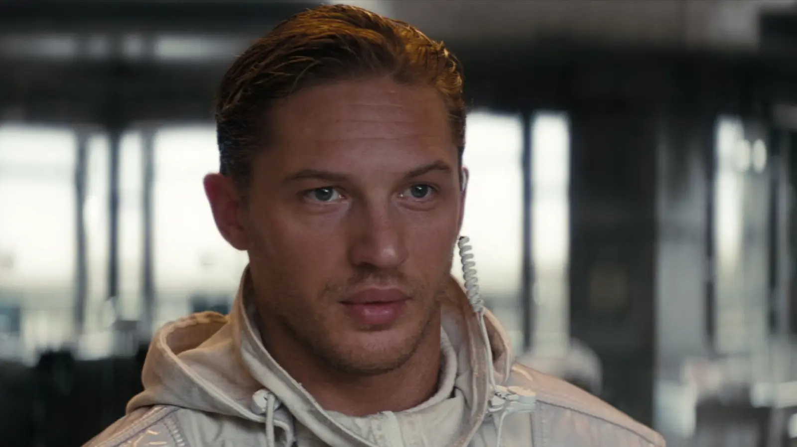

Leonardo DiCaprio — Dom Cobb

Leonardo DiCaprio nació el 11 de noviembre de 1974 en Los Ángeles, California, Estados Unidos. Es uno de los actores estadounidenses más reconocidos de su generación y comenzó su carrera profesional durante su adolescencia.
Antes de protagonizar El origen, ya había participado en películas como Titanic, Atrápame si puedes, Los infiltrados y El aviador.
En la película interpreta a Dom Cobb, un especialista en infiltrarse en los sueños de otras personas para extraer información de su subconsciente. Es el líder del equipo encargado de realizar la misión central.
Cobb posee una gran experiencia y conocimiento sobre el funcionamiento de los sueños, pero también arrastra un profundo conflicto personal relacionado con la muerte de su esposa, Mal. Los recuerdos y proyecciones de ella interfieren constantemente en sus sueños y representan uno de los principales obstáculos para completar la misión.
Marion Cotillard — Mal Cobb

Marion Cotillard nació el 30 de septiembre de 1975 en París, Francia.
Es una actriz francesa reconocida internacionalmente por su trabajo en cine.
En la película interpreta a Mal, la esposa fallecida de Dom Cobb.
Aunque Mal murió antes de los acontecimientos principales de la historia, continúa apareciendo dentro de los sueños como una proyección del subconsciente de Cobb.
Su personaje representa los recuerdos, la culpa y los conflictos psicológicos del protagonista. A medida que avanza la historia, su presencia se convierte en uno de los principales peligros para la misión.
Joseph Gordon-Levitt — Arthur

Joseph Gordon-Levitt nació el 17 de febrero de 1981 en Los Ángeles, California, Estados Unidos. Comenzó su carrera como actor siendo niño y posteriormente desarrolló una trayectoria en cine independiente y producciones comerciales.
Arthur es responsable de ayudar a investigar a los objetivos y planificar las operaciones. Se caracteriza por ser organizado, racional y preciso. Dentro del equipo, suele funcionar como una figura de control y equilibrio.
Protagoniza una de las escenas más conocidas de la película: una pelea en un pasillo donde la gravedad cambia constantemente de dirección.
Elliot Page — Ariadne

Elliot Page nació el 21 de febrero de 1987 en Halifax, Nueva Escocia, Canadá.
Interpreta a Ariadne, una joven estudiante de arquitectura que es incorporada al equipo de Cobb para convertirse en arquitecta de los sueños.
Su función consiste en diseñar los escenarios y espacios en los que se desarrollarán las operaciones. Ariadne aprende rápidamente a modificar la arquitectura de los sueños y es a través de su personaje que se explican muchas de las reglas fundamentales del universo de la película.
También comienza a descubrir los conflictos psicológicos de Cobb y se preocupa por la influencia que las proyecciones de Mal tienen sobre las misiones.
Tom Hardy — Eames

Tom Hardy nació el 15 de septiembre de 1977 en Hammersmith, Londres, Inglaterra.
Interpreta a Eames, un especialista conocido dentro del equipo como falsificador.
Su habilidad consiste en modificar su apariencia dentro de los sueños para adoptar la identidad de otras personas. Esto le permite manipular psicológicamente a los objetivos y participar en diferentes estrategias durante la misión.
Ken Watanabe — Saito

Ken Watanabe nació el 21 de octubre de 1959 en Koide, Niigata, Japón.
Es uno de los actores japoneses con mayor reconocimiento internacional.
En El origen interpreta a Saito, un poderoso empresario que contrata a Cobb para realizar la misión central de la película.
Saito ofrece utilizar su influencia para permitir que Cobb pueda regresar a Estados Unidos si logra completar el trabajo. A diferencia de otros clientes, participa activamente en la operación y acompaña al equipo durante los diferentes niveles del sueño.
Cillian Murphy — Robert Michael Fischer

Cillian Murphy nació el 25 de mayo de 1976 en Douglas, Cork, Irlanda.
Es un actor irlandés con experiencia en cine, televisión y teatro.
Interpreta a Robert Michael Fischer, el objetivo principal de la operación.
Fischer es el heredero de una importante empresa y el equipo de Cobb debe implantar en su subconsciente una idea que influirá en una decisión futura.
Aunque inicialmente parece ser únicamente el objetivo de la misión, sus conflictos personales y su relación con su padre se convierten en elementos fundamentales para el desarrollo de la historia.